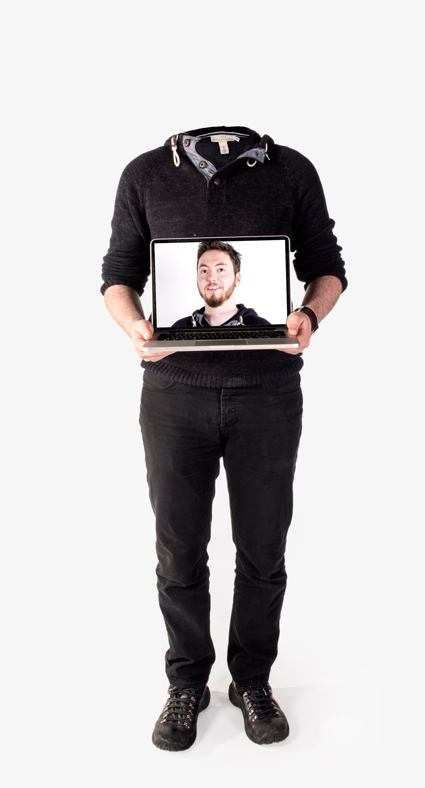
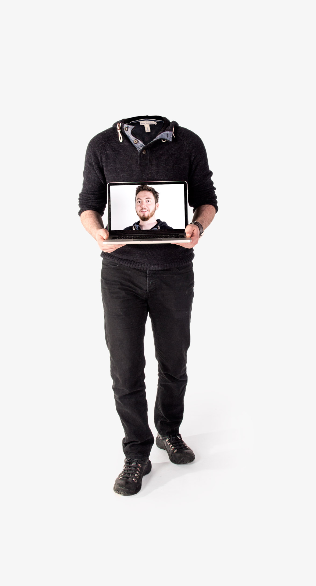
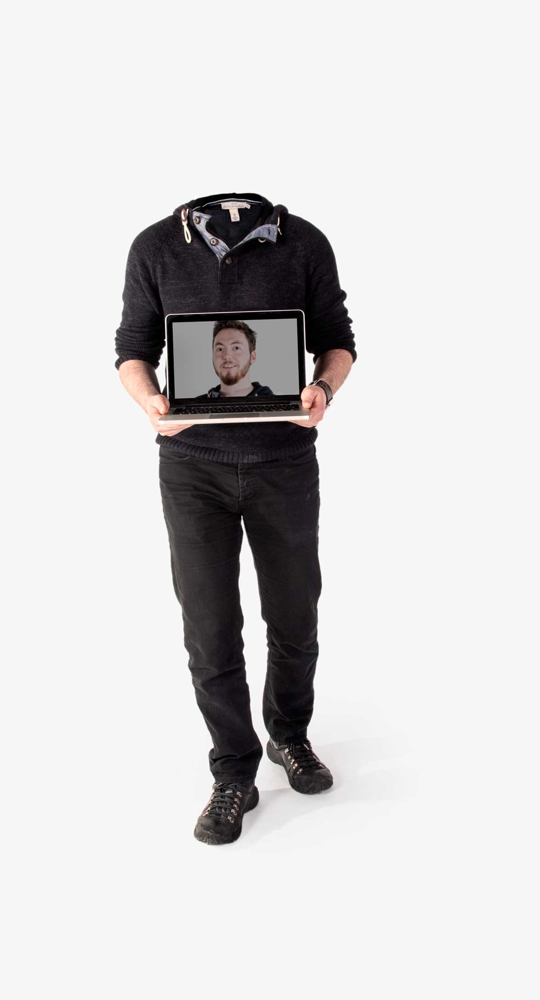
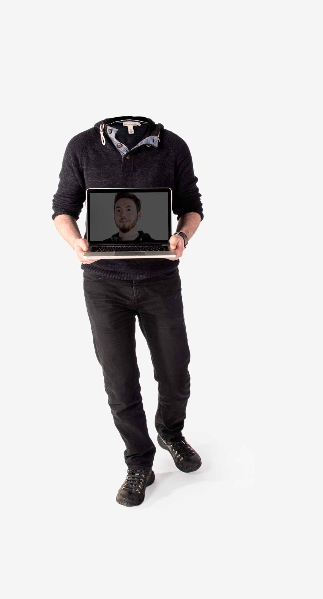
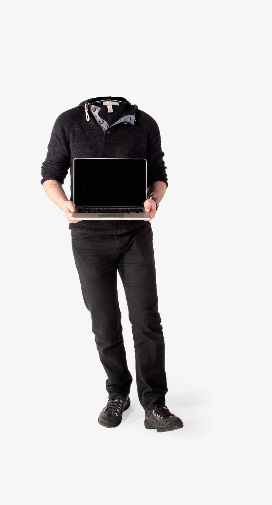
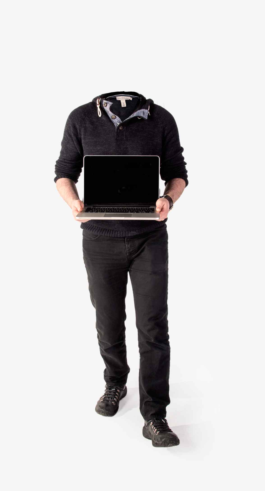
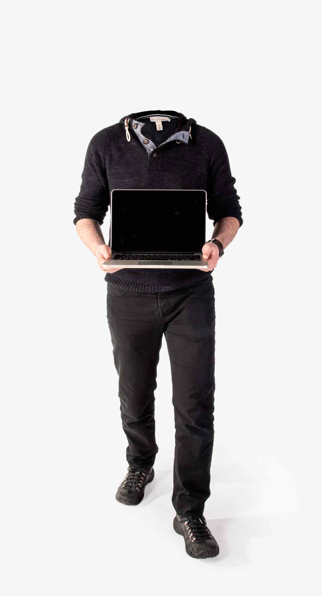
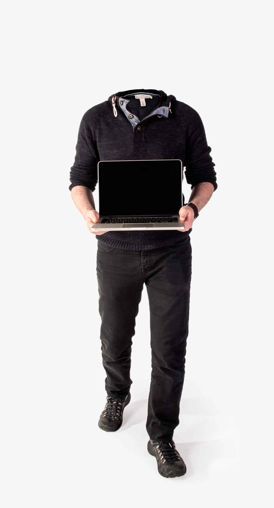
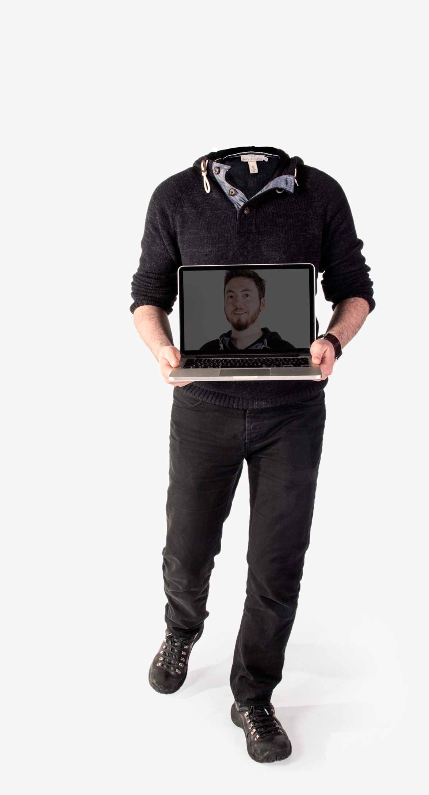
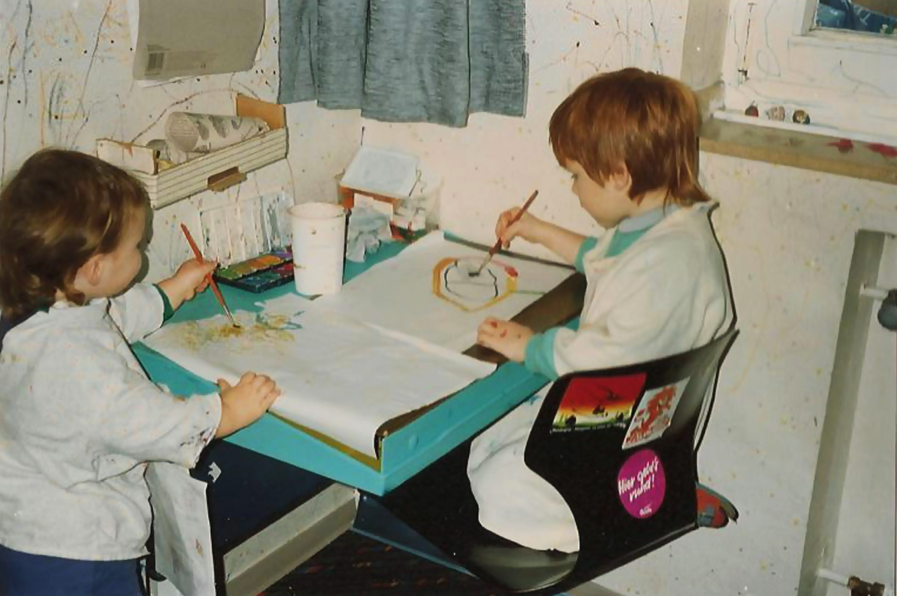

Hi I’mThibault
Thibault
Jan Beyer
an ambitious full-time designer and developer. Currently living, learning, working and playing in Cologne/Bonn, Germany.
 
portfolio
profile
The eagerness to learn and to produce great user experience is the principle that guides my work

education
- at Cologne Design Academy (KDA), Germany
- expected graduation, extended diploma in communication design (3 years), with honors
- final thesis: accessible web – open up websites for the physically impaired (won 3 awards)
- 3 month summer school at Friends of Design
- digital publishing course: iPad app, animated PDF, packaging redesign & branding for a pop-band
- at Rheinische Friedrich-Wilhelms-Universität Bonn, Germany
- kick started my writing and storytelling skills. I also learned ancient Hebrew, ancient Greek and Latin. The roots of modern language
- gathered deep knowledge in philosophical thinking and theories as well as people, human history and behaviors of different cultures
- I didn’t finish this B.A. and changed to the field of communication design, simply because I realized that theology and philosophy wasn’t what I wanted to do for a living
- 6 month internship/training at ndF Filmgesellschaft in Ellmau, Austria. Popular German TV show: der Bergdoktor ZDF
- learned to quickly get my bearings and settle into new environments, how to design a stage and how to tell compelling stories
- gathered insights of the creative industry and did first professional graphic design works
high school diploma (A Levels)
2003 - 2009 • focus: sociology & psychologyprimary school
1994 - 2003employment
- Worked as full time interactive developer for Hi-ReS! Berlin on an Angular dealerlocator for BMW.
- besides learning Angular and to write end to end & unit tests, I worked on large scale applications that were deployed in more than 26 Markets including right-to-left language markets as egypt.
- It was a great experience, unfortunately the company lost the pitch for BMW, thus losing the majority of their revenue.
- 3 months work in digital design for Edenspiekermann_ Berlin on a relaunch project of an online book community
- assisting with extensive quantitative and qualitative user researches during the project to research usability
- design and development of the sign-up process and on-boarding flow of new users
- work as a designer and developer for agentur-rubbeldiekatz Bonn, Germany
- redesign of 2 websites: outdoorgym & apt
- 3D prototyping for i22 one of the largest web companies in western germany
- led over a dozen creative marketing campaigns, corporate identity designs and the branding of almost all clients
- set-runner for 2Pilots for WDR. Movie: 'Es ist alles in Ordnung' (4,8 million TV-viewer). Directed by: Nicole Weegmann. Camera: Ngo The Chau
- assistant unit manager for Hives. An international sequel. Directed by: Simon Dolensky
- driver for Ratten. Directed by: Viktoria Gurtovaj
- making of for Aufstrich (289 KM). Directed by: Charlotte Marie Rolfes
- driver & making of for 21kHz (300 Mal). Directed by: Alexandra Brodski
- sound assistant for Gypsie. Directed by: Raluca-Maria Rusu
international filmschool cologne
2009 • film technologysubway germany
2012 – 2013 • supervisorholiday camp hotti ev.
2012 • honorary supervisorskills
Besides being creative and able to design & develop anything, the most important thing I learned over the years is to learn how to learn. That is what I improve every day by being genuinely interested in challenges. It entails being able to learn whatever is of use to solve your problem within a short amount of time. That is why I am confident to tackle anything. However, I still put up a list of
general
- creativity •••
- conception •••
- flexibility •••
- ambition •••
- thrive •••
- no coffee
development
- html & css •••
- angular •••
- jquery •••
- plugins & cms •••
- accessibility ••
- git, gulp ••
- javascript ••
- react ••
- nunjuck ••
- selenium •
- karma •
- jasmine •
- ruby & rails •
- php, python •
- node •
design
- sketch, ai, id, ps, fl •••
- image, photo, video •••
- icons, logos, illus •••
- 3d (cinema 4d) ••
- pr, ae, an ••
- cds & cis ••
- packaging ••
- editorial ••
- finishing ••
- ableton live •
marketing
- Schema.org •••
- seo ••
- branding ••
- consulting •
- presenting •
- social media •
languages
Fluent: German, French, English CAE C1 level
Learning: Japanese
Too long ago: Latin, Dutch, Hebrew, Greek
Contact
Hi, nice to meet you! I’m Tibo. How can I help you?